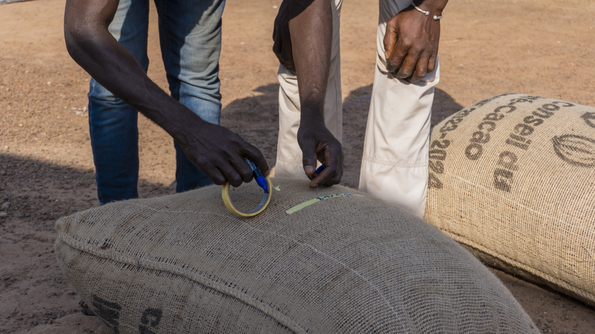
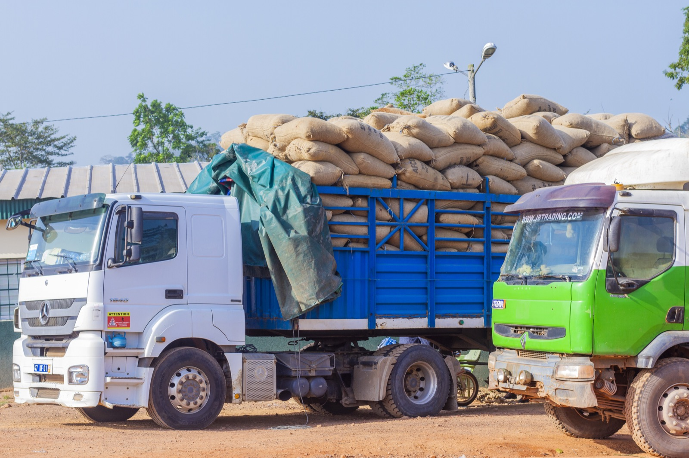

‘‘Mieux collecter pour garantir le succès d’une campagne agricole.’’
Le cœur de notre activité reste la collecte de fèves de qualité auprès de nos membres, une activité qui suit un processus rigoureux et bien défini. Ce processus commence par l’identification de nos producteurs et de leurs parcelles, en fonction des critères du programme de durabilité auquel ils adhèrent. Nous formons nos producteurs aux bonnes pratiques environnementales et agricoles, afin qu’ils assurent un entretien sanitaire et agronomique optimal de leurs parcelles, tout en respectant les normes en vigueur. Nous leur enseignons également les meilleures pratiques pour la récolte, l’écabossage, la fermentation, le séchage et le tri des fèves.
Les fèves de qualité produites par nos membres sont ensuite récoltées dans les magasins de section, puis acheminées au magasin central, après avoir passé le contrôle d’achat et être enregistrées dans notre chaîne de traçabilité. Nous achetons les fèves de nos producteurs au prix fixé par le conseil du café et du cacao pour la campagne en cours, et nous leur versons par la suite une prime, dans la limite de la marge allouée au programme de durabilité. La collecte est une activité qui requiert beaucoup d’attention et de précision, car elle est indispensable pour établir le système de traçabilité complet de la chaîne d’approvisionnement au niveau de notre coopérative. Nous assurons une traçabilité physique et numérique, qui nous permet de suivre le flux des fèves de cacao et les flux financiers entre la coopérative et les producteurs.
Nous disposons d’un service logistique efficace, composé de 38 véhicules de collecte, 5 remorques et 9 magasins de stockage. Ce qui nous permet de collecter les fèves de nos membres dans toutes nos sections et succursales. Ainsi, nous récoltons plus de 8 000 000 kg de fèves auprès de 8 000 producteurs, répartis dans 5 succursales, 73 sections et plus de 900 délégués.
Nos Services
- Collecte bord champ (38 véhicules)
- Pesage électronique transparent
- 9 magasins de stockage
- Contrôle qualité rigoureux
- Traçabilité physique et numérique
Chiffres Clés
Plus de 8 000 000 kg de fèves récoltées auprès de 8 000 producteurs répartis dans 5 succursales et 73 sections. Un réseau de plus de 900 délégués assure le lien constant avec nos membres.
